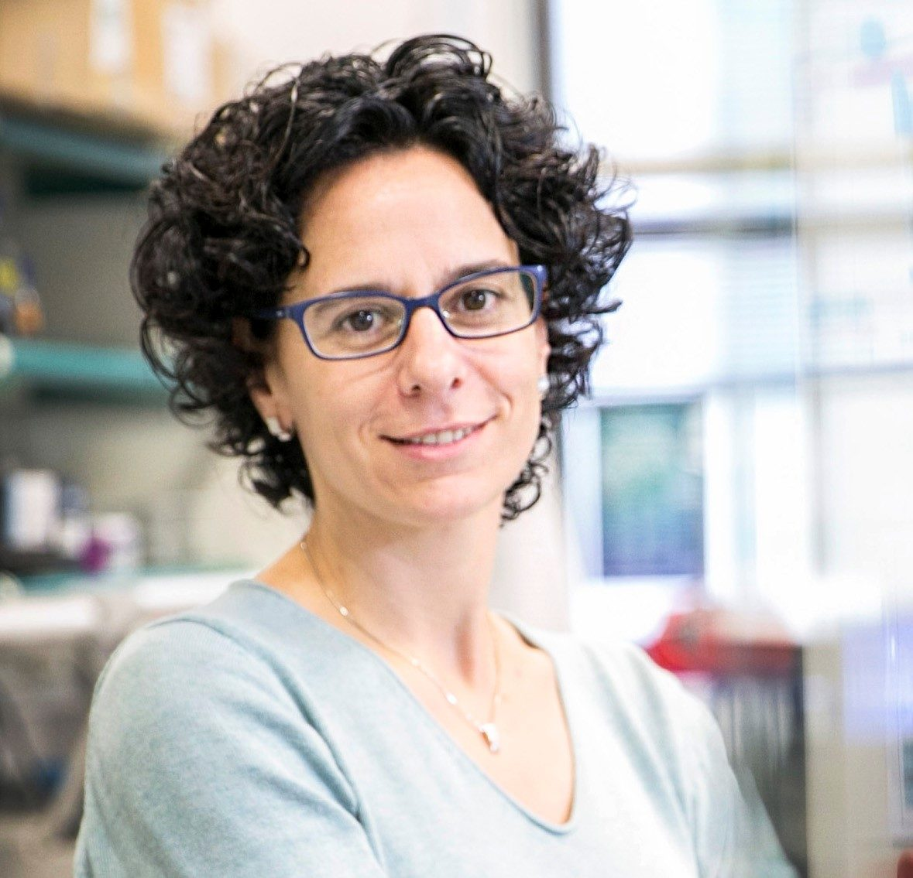

Científiques Catalanes
Núria López-Bigas
Genètica del Càncer

Núria López-Bigas, nascuda a Monistrol de Montserrat i vivint actualment a Manresa, és una bióloga catalana especialtizada en la enòmica computacional del càncer. Durant 10 anys ha estat cap del grup de recerca en genòmica biomèdica del Departaament de Ciències Experimentals i de la Salut i al Parc de Recerca Biomèdica de Barcelona.